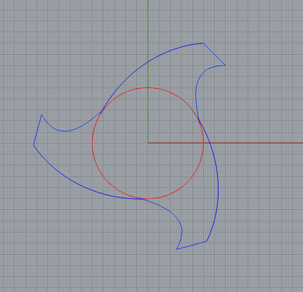
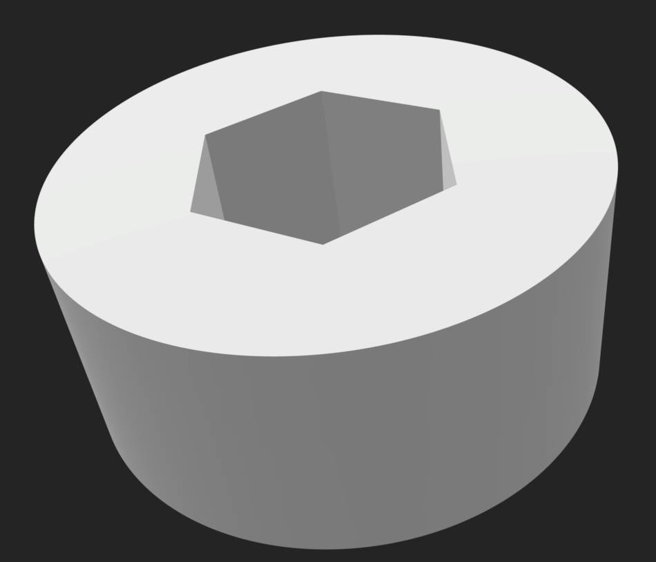

Assignment 7: Final Project Proposal
by Kefeng Wang in HCDE598

Concept
What I want to make is a shredder as a Christmas gift for my friend. I found this video on Youtube. Users should be able to cut paper in small pieces by using my shredder.
I found a open-resouse 3D modeling of shredder on Thingiverse. I would this the model as the blueprint and create my own parts based on the structure. The adjustment is very necessary because I need to change the thickness of the blades so that the size of the container would be requrie to change as well.
The image should below is the innards I designed for my shredder this week.
I have not touch on the funnel, the stand, and the hand lever so far. These three items should be all created in Rhino and printed out.
But I would use my sketches to help you better understand what I am trying to accomplish from this project.
Also, From here you can download my STL version of innards design.
This project would include the following skills I have learned from the class:
| Parts | Images | skills |
|---|---|---|
| The Blades |  | Rhino & Laser Cuting | The Spacers |  | Rhino & Molding and Casting |
| Gear | Grasshopper & Rhino & 3D Printing | |
| funnel | Rhino & 3D Printing | |
| Hand Lever | Rhino & 3D Printing | |
| Stand | Rhino & 3D Printing |
In summary, there are five skills I would be use for this assignment.
1. Rhino for making 3D models,
2. Grasshopper mainly for make gears,
3. Molding & Casting for making spacer,
4. Laser Cutting for making blades,
5. 3D printing for making rest pieces,
Breakdown of Tasks
- Create the Blades in Rhino ---> Done
- Laser Cutting the Blades
- Create the Space ---> 4/6 completed
- Create the rotating shaft in Rhino ---> Done
- Create the gear attached at the end of the rotating shaft
- Printing the rotating shaft
- Create the innards upper case in Rhino ---> Done
- Printing the upper case
- Design the bottom innards case in Rhino ---> Done
- Printing the bottom case
- Design the funnel
- Printing the funnel
- Design the stand
- Printing the stand
Timeline with Contingency Plans
| Time | Goal | Contingency Plan |
|---|---|---|
| Before 11/26 | Blade laser Cutting | 1. What if the Mill could not allow me to cut Acrylic materials? I plan to use the cardboard instead. 2. What if the laser cutting at Mill is down? In that case, I would 3D print these blades. |
| Before 11/22 | Spacers | 1. What if running out of the hydrostone? I plan to 3D printing the spacers. |
| Before 11/30 | Printing rotating shaft | Need to leave extra time for testing |
| Before 12/01 | Printing upper case of the innards | NONE |
| Before 12/01 | Printing bottom case of the innards | NONE |
| Before 12/03 | Designing the Stand | NONE |
| Before 12/03 | Designing the funnel | NONE |
| Before 12/03 | Printing the Stand | NONE |
| Before 12/03 | Printing the funnel | NONE |
a Bill of Materials with sourcing schedule
- Extra filament for the 3D printer from Amazon ----> Done
- Acrylic board from home depot ---> Incomplete because of lacking the confirmation from the Mill
- Extra cardboard from the UPS ---> Done
Here is all the documentation for assignment 7 !
you can go back to the HOME PAGE from here or you can get more information about my molding and casting assignment from here.